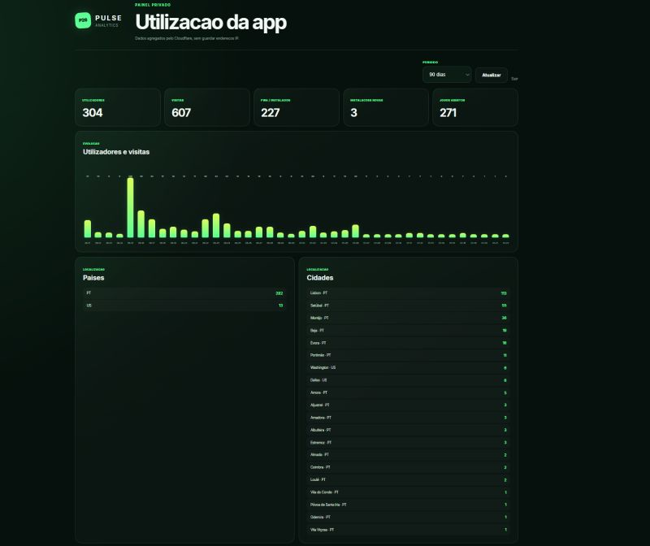

September 2026 — Present
Ambassador programme
Timestamp Ambassador
Timestamp
I represent Timestamp as part of its Ambassador Programme, helping to promote the company, its culture and opportunities within the academic community.
Computer Engineering Student
I am António Maia, a final-year Computer Engineering student with practical experience in software quality assurance and academic work across web, Android and database development.
I enjoy understanding how software works, identifying what can be improved and turning ideas into useful, dependable solutions. My studies have given me experience with programming, APIs, mobile development and relational databases.
From January to June 2025, I joined the Erasmus Exchange Programme at the VIKO Faculty of Electronics and Informatics in Vilnius. The experience strengthened my adaptability, communication and independence.
Ambassador programme
Timestamp
I represent Timestamp as part of its Ambassador Programme, helping to promote the company, its culture and opportunities within the academic community.
Summer internship
Timestamp
I applied for this summer internship to gain professional experience before completing my degree. I performed manual and automated software testing, recorded defects and test results, and collaborated with the team on software quality activities.
Education
Escola Superior de Tecnologia e Gestão · Instituto Politécnico de Beja
Final-year student developing a practical foundation across software development, databases, systems and software quality.
International experience
VIKO Faculty of Electronics and Informatics · Vilnius, Lithuania
An international academic experience that developed adaptability, communication and confidence in a new environment.
Academic work that reflects my interest in building complete, practical solutions.

Web application
A database-backed FIFA World Cup 2026 application with live football information, external REST API integration, JSON processing and data management. During the tournament, it reached 304 users, 607 visits and 227 installations.
View Pulse26 on LinkedInMobile application
An Android application developed in Kotlin with reminders, notifications, interface design and local data management.
Database system
A relational database with stored procedures, triggers, security roles and structured data management.
I combine development fundamentals with a quality-focused mindset and a collaborative approach.
Java · Python · SQL · JavaScript · Kotlin
HTML · CSS · REST APIs · JSON · Android · Jetpack Compose
Microsoft SQL Server · Database design · Administration
Manual testing · Automated testing · Defect reporting · Scrum · ISTQB Foundation syllabus
Git · GitHub · Visual Studio Code · Android Studio · Linux fundamentals
Teamwork · Communication · Attention to detail · Problem-solving · Responsibility · Adaptability
I am always open to meeting people, learning from new challenges and discussing technology.